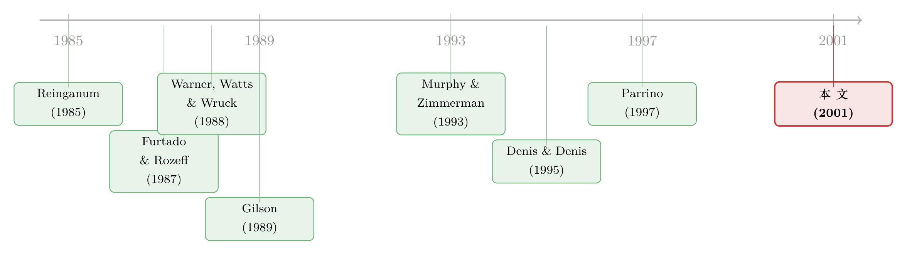

二把手为什么走人？——给 CFO 的去留做一次大样本体检
本文读的是 Mian (2001, Journal of Financial Economics)：作者用 1984–1997 年间 2,227 起 CFO 任命事件，第一次系统地回答了「公司为什么换掉它的首席财务官」。核心结论是——CFO 的更替本质上是纪律性的：换人之前，公司股价已经累计跑输市场 -15.14%（两年窗口），经营业绩也在下滑；而且 CEO 处理一个不称职 CFO 的典型动作，不是从内部提一个上来，而是到外面去挖人。
1 一个被忽略的人
公司金融的文献里，有一个人被研究得几乎透明——CEO。他什么时候被炒、被炒之前股价跌了多少、董事会独不独立、外部董事多不多，前前后后几十篇论文掰开揉碎地讲过。可就在他身边，有另一个人，掌着公司财务系统的最高权力：财报由他签字，融资由他拍板，开电话会议向华尔街解释战略的也是他——首席财务官（chief financial officer, CFO）。奇怪的是，截至这篇论文写作之时，居然没有一篇经过同行评审的学术论文专门研究过 CFO 这个角色。我们对这个「二把手」的了解，少得可怜。
于是一个自然的问题摆在面前：CEO 会因为业绩差被换掉，那么这套「业绩—更替」的纪律机制，会不会沿着公司的层级往下渗透？也就是说，CEO 会不会拿着同样的财务业绩尺子，去衡量、去更换他自己的高管团队成员——比如那个替他管钱的 CFO？
这就是这篇论文要回答的事。它的雄心不在于一个精巧的识别设计，而在于第一次把一群此前没人系统看过的人，摆到聚光灯下数清楚。
2 怎么把「换 CFO」这件事数出来
要研究 CFO 更替，第一道坎是：数据从哪来？当年没有现成的 CFO 数据库。作者的做法很朴素也很费力——从 Dow Jones News Retrieval 里调出 1984–1997 年间《华尔街日报》（Wall Street Journal, WSJ）的全文新闻，逐条读，把所有提到 CFO 变动、且公司在 Compustat 里有记录的事件挑出来。如果一家公司在 500 天内换了好几次 CFO，只保留第一次。最后得到 2,227 起事件。
这里埋着一个值得警惕的细节：1984–1990 年每年的事件数都不到样本的 5%，而 1991–1997 年间平均每年 234 起，远高于前期的每年 84 起（p < 0.01）。这究竟是 CFO 更替本身在后半段更频繁，还是仅仅因为 WSJ 早年只挑「有意思的」事件报道、后来才转向「逢换必报」？这是个会污染结论的问题，作者后面专门检验了它。
接着，作者做了一件这篇论文方法论上最见功夫的事：按「老 CFO 去了哪里」给每起事件分类。这不是可有可无的细分，而是整篇论文的牛鼻子——因为「去哪了」直接对应着「为什么走」。六个类别：
- QUIT（老 CFO 离开公司）：
783起，占 35%，是最大的一类，里面既有主动跳槽，也有被炒； - REASSIGN（留在公司但调任他职、且非晋升）：
465起，占 21%； - NEWPOSITION（此前没有 CFO，新设岗位）：
257起，占 12%； - OTHER（去世、健康原因或去向不明）：
251起，占 11%； - RETIRE（退休）：
245起，占 11%； - PROMOTE（老 CFO 升任 CEO／总裁／董事长）：
117起，占 5%。
与此平行，再按「新 CFO 从哪来」分四类：EXTERNAL（外部招聘）1,103 起占 50%、INTERNAL（内部提拔）881 起占 40%、NO APPOINTMENT（宣布老 CFO 走人但没同时任命新人）111 起占 5%、以及信息不足的 OTHER 占 6%。
把这两张分类表一交叉，第一个反直觉的事实就跳了出来。
3 第一个反转：CFO 比 CEO「更外来、更不退休」
先看那个 50% 的外部接任率。这是个什么概念？在 CEO 的世界里，Denis and Denis (1995) 和 Parrino (1997) 测出来的外部继任率只有 11%–20%。也就是说，换 CEO 时公司压倒性地从内部选人，换 CFO 时却有一半要从外面挖。CFO 这个位子，似乎远没有 CEO 那样「内部接班」的传统。
再看退休。Denis and Denis (1995) 里，28% 的 CEO 离任原因是退休；而本文样本里，只有 11% 的 CFO 是退休走的。一个直白的推论是：CFO 更像一个「训练场」，而不是一个职业生涯的「封顶位置」。很多人坐上 CFO，不是为了在这里干到退休，而是把它当成跳板——要么跳去别的公司，要么往上爬一格。
这两个事实合在一起，已经在暗示：CFO 的流动性天然就比 CEO 高，去留更频繁、更「市场化」。但「流动性高」不等于「纪律性强」。要证明换 CFO 真的是在惩罚差业绩，还得把股价和经营业绩翻出来看。
4 真正关键的一步：换人之前，股价已经跌了
这是全文的核心。作者用市场模型（market model）估计每只股票的超额收益（excess return），估计窗口取事件前 (-750, -501) 这 250 个交易日，市场基准用 CRSP 价值加权指数。然后看 CFO 更替之前两段窗口的累计超额收益（cumulative average abnormal return, CAR）：一段是约两年的 (-500, -2)，一段是约一年的 (-250, -2)。
结果（如表 4 所示）相当干净：
- 全样本两年窗口 CAR =
-15.14%，一年窗口 CAR =-10.72%，两者都在 1% 水平上显著异于零； - 而两段 CAR 之差只有
-4.42%，在 10% 水平上不显著。
这后半句很重要。它说明：业绩下滑主要集中在临近换人的那一年里，再往前一年其实没怎么跌。换句话说，不是公司长期半死不活，而是「最近一年出了问题，然后 CFO 就走了」——这正是纪律机制该有的时间结构。
那么前面那个让人不安的问题——「会不会只是 WSJ 早年专挑刺激性事件报道」——作者怎么回应？他把样本切成 1984–1990 和 1991–1997 两段比 CAR：早期两年窗口 -17.84%，晚期 -14.62%；都显著为负，但两者之间不显著。一年窗口同理（-12.97% vs -10.03%）。既然早晚两期跌得一样狠，就没有证据说早年报道的是「更戏剧化」的换人。报道口径的变化，没有偷换掉结论。
但全样本是个大杂烩——退休的、升迁的、被炒的混在一起。真正的纪律性，应该藏在「老 CFO 去向」的横截面差异里。于是作者按 OLD 类别拆开看：
- QUIT 子样本：两年 CAR
-18.01%，一年-14.11%，都在 1% 显著； - REASSIGN 子样本：两年
-20.64%，一年-14.33%，都在 1% 显著； - RETIRE 子样本：两年
-7.86%（5% 显著），一年只有-3.42%（不显著）； - PROMOTE 子样本：两年
+5.07%，一年+0.46%，都不显著。
这个排序漂亮地讲完了整个故事。离开公司（QUIT）和被调任（REASSIGN）的，是业绩最差的两类；而升迁（PROMOTE）的那批，业绩根本没下滑——把 QUIT 和 PROMOTE 直接相减，两年 CAR 差距高达 -23.08%（1% 显著）。也就是说，市场早在公布换人之前，就已经用脚把「这个 CFO 干得好不好」投了票：干得差的被请走，干得好的被往上提。这与「CFO 更替是纪律性的」假说严丝合缝。
经营层面的证据指向同一个方向：QUIT 这类「非退休离开」的事件，事前的经营资产回报率（operating return on assets）下滑得最厉害；而升迁、调任、退休的那几类，经营业绩相对体面。更有意思的是，作者发现——在「营收高速增长、但经营业绩疲软」的公司里，CEO 的典型反应是到外面去挖 CFO，而不是内部提拔。这给那个 50% 的外部接任率补上了机制：摊子铺得太大、钱却没管好的时候，公司倾向于「引进外部人才」来收拾。
5 公告日那天，市场说了什么
事件研究的另一半，是看公布换 CFO 那两天 (-1, 0) 的市场反应。全样本的答案是：几乎没反应（CAR ≈ 0，不显著）。这很正常——前面跌了两年，市场早把换人这件事 price in 了。
但横截面里又藏着两个细节。第一，市场对内部接任的反应更冷淡：依子样本不同，内部接任的公告超额收益要么是零，要么显著为负。第二，也是最刺眼的一个数字——当 CFO 是突然离开、且没有同时任命接班人（NO APPOINTMENT）时，公告日 CAR 为 -2.51%（1% 显著）。
这个 -2.51% 几乎是在替「纪律性解雇」盖章。一个公司会在什么情况下「先把人撤了、接班人却还没着落」？最可能是出了问题、必须立刻让人走，根本来不及从容物色。作者还顺手验证了一个竞争性解释：会不会只是因为「外部搜寻需要时间」，所以才延迟任命？他追踪了这 111 起 NO APPOINTMENT 事件一年后的接任来源，发现延迟任命的外部接任率（64%）与同时任命的外部接任率（55%）没有显著差异（p < 0.18）。所以延迟不是因为在外面慢慢找人——更像是「先斩，后面再说」。
6 是不是只是 CEO 和 CFO「绑在一起走」？
读到这里，一个聪明的质疑会冒出来：你测到的「换 CFO 前业绩差」，会不会只是换 CEO 那套故事的影子？毕竟 CEO 和 CFO 常被看作同一个管理团队，老板下台，财务总监跟着走，是常事。如果是这样，那 CFO 更替前的业绩下滑，不过是 CEO 更替研究早就记录过的东西换了层皮。
作者用两步堵住了这个出口。第一，他确认 CFO 更替之前，CEO 更替率确实异常地高——两个位子的人事动荡确实相关。第二，也是更关键的——他把样本里不含 CEO 更替的那些事件单独拎出来，发现「业绩—CFO 更替」的关系依然成立。
于是反转出现了：CFO 离任前的业绩下滑，不是 CFO 和 CEO「凑巧一起走」的副产品，而是一个独立存在的现象。CFO 的去留，自有它自己的纪律逻辑。顺带，作者还观察到一个略带苦涩的事实——这些管理团队在更替之后就散了：离任的 CEO 和 CFO，后来并不会去同一家公司搭班子。所谓「团队」，更替一来就土崩瓦解。
（关于「炒掉一个层级更低的经理，到底比炒 CEO 容易在哪」，可参见《炒一个分公司经理，比炒一个 CEO 容易在哪？》；而 CFO 自身决策被业绩与信号污染的问题，则有《工具变量「洗掉」的，恰恰是 CFO 最需要的那部分因果》。）
7 文献脉络
把这篇论文放回它的坐标系，故事是这样展开的。
早期工作几乎都盯着最顶上那个人。Reinganum (1985) 看高管继任对股东财富的影响；Furtado and Rozeff (1987) 研究公司主动发起的管理层变更的财富效应；Warner, Watts and Wruck (1988) 把股价和高层变更联系起来，发现 CEO 更替之前业绩在下滑；Weisbach (1988) 则把外部董事请进来，论证董事会独立性如何影响 CEO 更替。
接着，一条更聚焦的线索是「财务困境—管理层动荡」：Gilson (1989) 研究困境中的管理层更替，Bonnier and Bruner (1989) 分析困境公司高管变更的股价反应，Murphy and Zimmerman (1993) 细致刻画了 CEO 更替前后的财务表现。

然后，这条研究在 1990 年代后期被推到了一个更精细的层面：Denis and Denis (1995) 系统记录了高层被解雇后的业绩变化，给出了那条被反复引用的基准——被迫离职的 CEO，事前 250 天 CAR 高达 -24.0%，而正常退休则无异常；Parrino (1997) 把外部继任问题做成了横截面分析，给出了 CEO 外部继任率的基准。
而本文所处的位置，是把这一整套「业绩—更替—继任」的分析框架，第一次从 CEO 平移到了 CFO 身上。它的贡献不在于发明新方法，而在于把一群从未被系统研究过的「二把手」拉进了这套话语，并且发现：纪律机制确实沿着层级往下渗透，但 CFO 又有自己独特的去留模式（更外来、更少退休、更像跳板）。
8 评论与延伸（Q&A + 研究方向）
(a) 几个可能的疑问
Q：50% 的外部接任率这么高，会不会只是「CFO 这个头衔」本身被滥用、定义太松导致的？
有这个风险，但作者的分类在相当程度上对冲了它。他用 RETIRE 这类「常规过渡」作为外部接任的正常基准（40%），再去比 QUIT（56%）和 PROMOTE（14%），靠的是类别之间的相对差异而非绝对水平。即便头衔定义有噪声，只要噪声在各类别间大致均匀，「QUIT 外部接任最多、PROMOTE 最少」这个排序仍然成立，而这个排序本身就是纪律性的证据。
Q：CAR 为负，凭什么就说是「公司主动纪律」，而不是「CFO 看公司要不行了自己跳船」？
这正是本文诚实承认的软肋——QUIT 类别里主动跳槽和被解雇是混在一起的。但有两块证据偏向「纪律」：一是 NO APPOINTMENT 公告日的
-2.51%，主动跳船很难解释为什么连接班人都来不及找；二是表 2 的报道理由里，「业绩差被纪律处分」「被解雇」「法律/财务造假」等明确的负面理由占了相当份额。当然，自愿离职的存在只会削弱而非夸大纪律性的证据，所以它是一个对结论有利的偏误方向。
Q：业绩下滑「集中在最后一年」，这到底是支持还是削弱纪律假说？
支持。如果换人只是公司长期沉疴的自然结局，那 CAR 应该在两年窗口里均匀地、持续地下滑；可数据显示两年与一年 CAR 之差不显著（
-4.42%），说明跌势集中在临近换人的那一年——这恰恰是「业绩一恶化、CEO 就出手」的快速反应特征。
Q：为什么市场对内部接任的反应反而更差（零或显著为负）？
一个解读是：内部提拔传递的信息更模糊。外部空降至少意味着公司下决心引入新能力、做出改变；而内部接任可能被读成「换汤不换药」，甚至是「问题出在体系、却只换了个执行者」。这与「营收高增长+业绩疲软的公司倾向外部挖人」是一致的——外部接任承载着「改变」的信号。
Q：这篇 2001 年的论文，结论在今天还站得住吗？
大方向大概率仍在，但量级要打问号。SOX 法案之后，CFO 的法律责任（财报签字、内控认证）急剧加重，CFO 更替的频率、动因和市场反应都可能被重塑。本文是一个珍贵的「前 SOX 基准」，但任何想引用它具体数字的人，都应该意识到制度环境已经换了一茬。
Q：用 WSJ 新闻文本人工分类，会不会引入系统性偏差？
会，主要是覆盖偏差和归因偏差。覆盖偏差作者直接检验了（早晚两期 CAR 无显著差异），算是部分排除；但「报道理由」本身可能被公关美化——表 2 里 QUIT 有 249 起、REASSIGN 有 345 起干脆「未给出理由」，沉默本身可能就是信息。靠新闻文本归因，天然会低估那些被刻意淡化的纪律性解雇。
(b) 几个可能的研究问题与提案
1. CFO 更替与公司债定价
【经济故事】CFO 直接掌管融资与财报，他的去留应该比 CEO 更直接地牵动债权人的神经——尤其是「突然离开、无接班人」这类信号。债市会不会比股市更敏感地给 CFO 纪律性更替定价（信用利差走阔）？【可行性】中。需要把本文式的 CFO 事件分类与 TRACE 债券交易数据、信用利差合并；识别上可借鉴本文的横截面切分（QUIT/NO APPOINTMENT vs PROMOTE/RETIRE），用事件研究看利差反应。难点在事件样本与有流动债券的公司交集偏小。
2. CFO 更替前后的财报质量与「大洗澡」
【经济故事】如果 CFO 更替是纪律性的，那新 CFO 上任的第一年往往是「甩包袱」的最佳时机——把前任的水分一次性计提干净（big bath），再重新起步。【可行性】高。用应计项目、重述（restatement）数据，配合 CFO 更替事件，做更替前后的盈余管理对比即可。识别相对干净，数据（Compustat + Audit Analytics）现成。
3. 外部接任的「人才市场」网络
【经济故事】本文发现 CFO 高度市场化（50% 外部、像跳板），那么 CFO 的流动是否构成一张公司间的人才网络？高质量 CFO 从哪些公司流向哪些公司，会不会预示着两家公司的业绩或战略关联？【可行性】中。需要高管履历数据（如 BoardEx/ExecuComp）追踪个人流动轨迹；识别难点在于「人随业绩走」与「业绩随人走」的内生纠缠。
4. 外资持有人与 CFO 纪律
【经济故事】外资机构持股往往伴随更强的治理诉求。外资持股比例高的公司，CFO 的「业绩—更替」敏感度会不会更陡？这能把本文的纪律机制与跨境治理压力连起来。【可行性】中。需要机构持股（13F）按外资/内资拆分，并构造 CFO 更替-业绩敏感度的交互项；识别上要小心外资选择进入「治理本就更好」的公司这一自选择问题，可考虑用指数纳入等外生冲击。
9 我的判断
这篇论文的贡献，是典型的「第一个把灯打开的人」式贡献。它没有花哨的识别策略，也没有理论模型，它的价值在于：在一个完全空白的领域里，用扎实的手工数据和清晰的分类，把「CFO 为什么走」这件事讲成了一个有内在逻辑的故事——纪律机制会沿层级下渗，但 CFO 又比 CEO 更外来、更少把位子坐到退休。那个 50% 对 11%–20% 的外部接任率对比，那个 -2.51% 的突然离任反应，都是会被后来文献反复引用的「事实砖块」。
但它对识别的处理是脆弱的，作者本人也很坦诚。最大的问题是 QUIT 里主动与被动混为一谈：CAR 为负，既可以是「公司炒了差 CFO」，也可以是「CFO 预感不妙先跑了」，本文无法在事件层面把两者干净地分开，只能靠 NO APPOINTMENT 子样本和报道理由旁敲侧击。其次，全部依赖 WSJ 文本的人工归因，沉默的样本（大量「未给出理由」）很可能恰恰是信息最丰富、也最被刻意淡化的那批。
如果让我说接下来最想看到什么：一是把这套分析搬到 SOX 之后，看 CFO 责任加重如何改写更替的动因与市场反应；二是顺着债权人的视角，看 CFO 这个「管钱的人」的纪律性更替，到底有没有被信用市场认真定价——这正是本文留下的、最值得用今天的高频债券数据去回答的一块空白。
参考文献
Bonnier, K., Bruner, R.F. (1989). An analysis of stock price reaction to management change in distressed firms. Journal of Accounting and Economics 11, 95–106.
Denis, D.J., Denis, D.K. (1995). Performance changes following top management dismissals. The Journal of Finance 50, 1029–1057.
Furtado, E.P., Rozeff, M.S. (1987). The wealth effects of company initiated management changes. Journal of Financial Economics 18, 147–160.
Gilson, S. (1989). Management turnover and financial distress. Journal of Financial Economics 25, 241–262.
Mian, S. (2001). On the choice and replacement of chief financial officers. Journal of Financial Economics 60, 143–175.
Murphy, K.J., Zimmerman, J.L. (1993). Financial performance surrounding CEO turnover. Journal of Accounting and Economics 16, 273–316.
Parrino, R. (1997). CEO turnover and outside succession: a cross-sectional analysis. Journal of Financial Economics 46, 165–197.
Reinganum, M.R. (1985). The effects of executive succession on stockholder wealth. Administrative Science Quarterly 30, 46–60.
Warner, J.B., Watts, R.L., Wruck, K.H. (1988). Stock prices and top management changes. Journal of Financial Economics 20, 461–492.
Weisbach, M.S. (1988). Outside directors and CEO turnover. Journal of Financial Economics 20, 431–460.